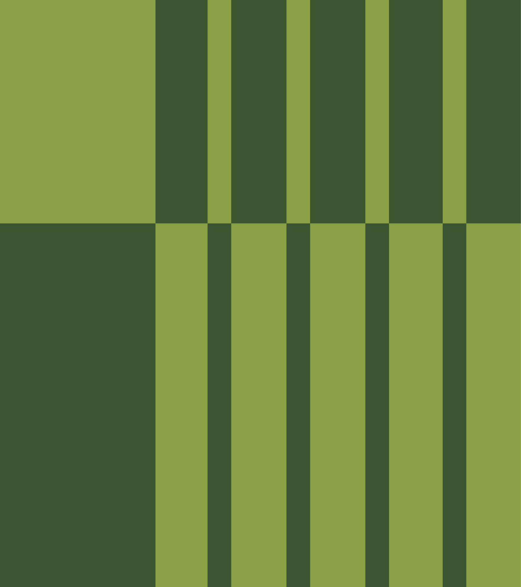
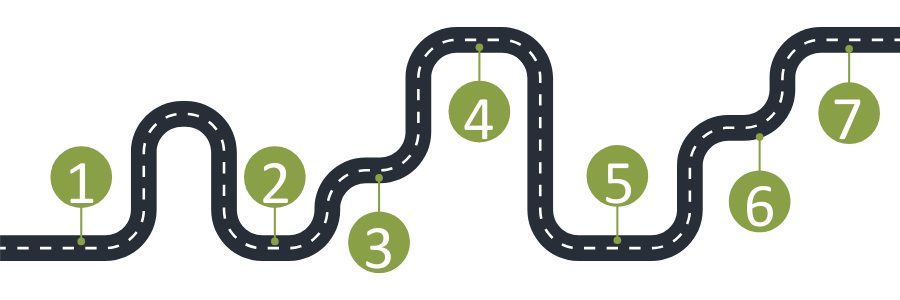

Omni’s qualitative analysis guide supports staff in conducting transparent, systematic, and actionable qualitative research in complex, real-world settings. Our clients often require timely, credible findings grounded in participants’ lived experiences. To meet these demands, this guide outlines practical workflows rooted in two complementary paradigms: pragmatism and critical realism.
Pragmatism directs us to focus on real-world utility and actionable insights.
Critical realism encourages us to understand participant perspectives while acknowledging how those perspectives are shaped by broader structures and contexts.
Together, these paradigms support our commitment to meaningful, context-aware findings that are both usable and methodologically sound.
This guide provides step-by-step instructions for conducting qualitative analysis, from data pre-processing to reporting. It includes techniques like word frequency analysis, sentiment analysis, thematic coding, content analysis, and topic modeling, all implemented with transparency and adaptability in mind.
Key Features of the Guide:
Tool Flexibility: While R is our preferred tool for reproducibility and integration with quantitative methods, the guide also includes best-practice workflows for using Dedoose (for team-based coding) and AI tools like NotebookLM (for early exploratory work).
Method Selection Guidance: We offer practical decision points based on dataset size, analytic goals, and project context, ensuring methods match the scope and purpose of each evaluation.
Structured Workflows: Omni workflows help analysts navigate all stages of qualitative analysis—from clarifying analytic frameworks and coding approaches to integrating qualitative and quantitative data in mixed-methods designs.
Adaptability: Whether you're working with rich interview transcripts or brief open-ended survey responses, the guide provides adaptable tools that emphasize rigor, transparency, and context.
By centering participant voices, documenting our methods clearly, and
maintaining a reflexive stance, this guide strengthens the credibility
and usefulness of Omni’s qualitative work. It equips staff with tools
and strategies that not only meet evaluation standards but also foster
accountability, responsiveness, and connection to the communities we
serve.
Version Control
Version
Description
Date released
-4.0
Adding interactive features
2025-08-14
-5.0
Second draft for review and rebrand
2025-08-14
-6.0
Initial draft for review
2025-03-26
Introduction
At Omni, we conduct qualitative research in complex, real-world environments. Our clients and projects often require fast timelines, nuanced insights, and transparent methods that can stand up to external review. To meet these needs, we use systematic, reproducible qualitative analysis methods grounded in pragmatism and critical realism.
At Omni, we conduct qualitative research in complex, real-world environments. Our clients and projects often require fast timelines, nuanced insights, and transparent methods that can stand up to external review. To meet these needs, we use systematic, reproducible qualitative analysis methods grounded in pragmatism and critical realism.
This approach ensures our findings are actionable and reflect the realities and lived experiences of participants, while acknowledging the influence of context, interpretation, and limitations in our data.
Purpose
This guide was developed to support Omni staff in conducting methodologically sound, transparent, and reproducible qualitative analyses. It offers practical, step-by-step instructions and highlights best practices for text pre-processing, analysis, and reporting. Whether working with interview transcripts, focus groups, open-ended survey responses, or other text-based data, Omni teams can use this guide to produce findings that are both grounded in participants’ voices and useful for program improvement and decision-making.
How does this guide align with Omni’s core values?
What This Guide Covers
You’ll find guidance on:
Text mining / Natural Language Processing (NLP)
(e.g., word frequency, sentiment analysis, topic modeling)
Thematic and content analysis
(e.g., dictionary-based coding, thematic coding frameworks)
Narrative analysis @qualBPT do we need?
(Optional: e.g., structural analysis, language style matching)
Visualizing and reporting qualitative data
(e.g., word clouds, bar charts, heatmaps, joint displays for mixed-methods)
These methods can be applied to text from: Word documents (.docx), PDFs (.pdf), Zoom transcripts (.docx or .txt), open-ended survey responses (.xlsx or .csv), and more.
In many applied settings, qualitative methods (and especially mixed-methods) are described in vague terms. Reports may mention “themes emerging” or “triangulating findings,” but rarely explain the actual process used to get there. This vagueness makes it hard to replicate or assess qualitative findings and limits their credibility.
At Omni, we aim to avoid vague or ad hoc practices. We document
clear, systematic workflows that integrate qualitative insights with
quantitative data when appropriate.
Why Are Existing Descriptions of Methods So Vague?
Several factors explain the common lack of clarity in methodology:
Different disciplines (e.g., public health vs. education research) use different frameworks, leading to inconsistent approaches.
Quantitative research has standard tools (R, SPSS, Stata), but qualitative tools (NVivo, MAXQDA, Dedoose) often rely on manual processes and don’t always integrate cleanly with quantitative workflows.
Qualitative analysis requires human interpretation and reflexivity. Documenting every step is time-consuming, and under tight timelines, many organizations skip this critical process.
Qualitative and quantitative teams often work separately, without shared standards or mixed-methods integration.
[Hannah is just messing around here to see how an .mp4 reads into R and plays]
Omni's Approach to Analysis

Omni’s qualitative practice is grounded in pragmatism and critical realism.
Pragmatism means we focus on providing useful, actionable insights for real-world decision-making. Our goal is to help clients understand participants’ experiences in ways that inform policy, programs, and practice. This reflects a pragmatic stance rooted in the work of scholars like Morgan (2007) and Danermark et al. (2015) , emphasizing inquiry that is guided by consequences and utility.
Critical realism acknowledges that while participants’ experiences reflect real phenomena (barriers, challenges, successes), they are shaped by context and perspective. Influenced by Fletcher’s (2017) work and work by others, this perspective guides us to acknowledge our limitations, reflect on researcher influence, and avoid overstating claims.
Omni’s qualitative practice draws on reflexive thematic analysis (Clarke & Braun, 2006) and content analysis (Hseih & Shannon, 2005) , emphasizing the researcher’s active role in interpreting data and constructing themes, in alignment with our commitment to critical realism and methodological transparency.
Transparent and Systematic Workflows
At Omni, we use structured qualitative and mixed-methods workflows. These processes are transparent, systematic, and designed to integrate qualitative and quantitative findings when appropriate.

Example Omni Workflow for Qualitative analysis:
Clarify Purpose and Analytic Framework
Define the evaluation questions and purpose of the qualitative analysis
Select an analytic method
Prepare and Familiarize with the Data
Clean transcripts/text
Read through interviews, discussions, or sessions at least once (text like reports you may not need context for, use your discretion)
Systematic Coding of the Data
Deductive, Inductive, or hybrid
Deductive coding uses predefined codes (like our dictionaries) to apply to our data
Inductive coding uses text mining or topic modeling to identify emergent themes
Theme Development and Refinement
Analyze and refine codes/themes
Interpretation and Synthesis
Compare themes to evaluation questions and contextual frameworks
Explore themes visually
Get ready for reporting
Choosing Your Analysis Tool: R vs. Dedoose vs. AI
R
Best when
Datasets are large or mixed (qual + quant), need audit trails.
You want reproducibility, automation, version control.
Time crunch with existing scripts/templates; IRR optional or phased.
Requires clear documentation to ensure shared understanding.
Dedoose
Best when
Collaborative coding with a team; training new coders.
Small–moderate corpora.
Quick turnarounds with IRR workflows built in the tool.
Pros
Multi‑user collaboration, role permissions, IRR features.
Low barrier for non‑programmers.
Cons
License cost.
Automation/custom analyses limited vs. code.
Reproducibility/export trails less granular than scripted pipelines.
AI
Best when
Early exploration: surfacing possible themes/codes quickly.
Short corpora; scoping questions; drafting a codebook.
Stakeholder previews before deeper human analysis.
Pros
Very fast; low barrier; helps brainstorm structures.
Can summarize, cluster, and compare at a glance.
Useful for iteration before moving to R or Dedoose.
Cons
Not a substitute for human interpretation; can hallucinate.
Inconsistent across runs; shallow context if prompts are weak.
Data governance/privacy limits—avoid sensitive uploads without approvals.
Method Selection
Once pre-processed, your data is ready for analysis. Selecting the right method depends on:
How much data you have
Your research question(s)
Whether you need exploratory insights or answers to specific questions
Your integrative framework (if conducting mixed-methods)
Understanding Your Data Before Analysis
Before starting pre-processing or analysis, it’s important to assess the scope and quality of your data. Take time to understand:
How many participants are included?
How much text do you have (word count, number of responses)?
How detailed are the responses (in-depth vs. brief)?
How are participants grouped (by stakeholder type, session, etc.)?
Whose voices are most important to elevate in this analysis?
This step ensures you choose methods that fit your dataset and align with your project goals. For example:
Smaller datasets (under ~2,000 words) are well-suited to word frequency, sentiment analysis, or basic content analysis.
Larger datasets (5,000+ words) can support topic modeling or advanced thematic analysis.
Assessing your data upfront helps set realistic expectations for analysis and ensures your findings are grounded, transparent, and defensible.
Working with a Small Corpus
At Omni, qualitative research often happens in real-world settings, with tight timelines and limited participant availability. We may aim for 10 interviews and complete 5. We may expect long, detailed conversations and instead get brief answers. Even with these constraints, small datasets can still provide meaningful insights, especially when there is consistency across participant experiences.
When working with limited data:
Focus on what participants actually shared, rather than attempting to generalize.
Document patterns and recurring concerns, while linking them clearly to the project’s research questions.
Be transparent about the number of participants, the methods used, and any limitations in interpretation.
Smaller samples can still highlight critical issues—such as barriers to access or common recommendations for program improvement—but the scope and representativeness of these findings should be clearly communicated.
Suggested Methods by Dataset Size and Purpose
Note: If you are working with open-ended
responses from a survey and have data from 30 or fewer
participants, carefully consider whether the data are
sufficient for meaningful analysis. In many cases, it is appropriate to
report that there were too few responses to analyze
systematically. However, if you need to report findings, be
transparent about limitations. Focus on describing frequently
mentioned key words, rather than inferring broader themes.
Avoid suggesting consensus when data are limited, and clearly state that
findings reflect input from a small number of
participants. Transparent reporting maintains the credibility
of your analysis.
Grouping Voices to Guide Analysis
Before you start coding or analyzing, decide:
Whose voices are we centering in this analysis?
How will we group participant responses?
Your grouping choices influence:
Which perspectives are highlighted
How themes emerge
What questions you can answer
At Omni, we might group data by:
Participant (individual experiences)
Stakeholder Group (e.g., educators vs. public health professionals)
Discussion Section (e.g., barriers vs. recommendations)
These decisions should align with the project’s goals and be clearly documented in reports and presentations.
Ready for Pre-processing?
Once you understand your data, you’re ready to start pre-processing!
Cleaning and Pre-Processing Your Data
Terminology
Before starting your pre-processing and analysis, it’s important to understand a few core terms. These concepts are essential for working with text data and deciding on the appropriate pre-processing and analysis steps.
Term
Definition
Tokenization
Breaking text into units (words, phrases, sentences)
Stemming
Reducing words to their root (e.g., “running” → “run”)
Lemmatization
Reducing to dictionary form (e.g., “better” → “good”)
Stop Words
Common words often removed (e.g., “the”, “and”)
Document-Term Matrix
Table of word frequencies across documents
TF-IDF
Term importance based on frequency and inverse document frequency
Corpus
Collection of text documents as one dataset
Dictionary
List of keywords/phrases used to code or categorize text
# Load all packages library(tidyverse)library(tidytext)library(quanteda)library(textstem)library(sentimentr)library(topicmodels)library(flextable)library(knitr)library(omni)
Pre-processing prepares your qualitative data for analysis by cleaning, organizing, and standardizing text. This step ensures the data is usable for word frequency, sentiment analysis, topic modeling, and other text mining techniques.
You should always assess the scope and quality of your data first:
Are the data cleaned (lowercase, removed participant names, punctuation, symbols)?
Check out our function that does all of these data cleaning tasks for
you in R! You can also segment your text by question, combine multiple
interviews and focus groups into one dataset, and more.
How much text do you have? (Word counts per document/response.)
How many participants contributed?
How detailed or shallow are the responses?
Whose voices are you analyzing?
Once you understand your data, you can decide which pre-processing steps are appropriate.
Tokenization
Tokenization breaks text into individual pieces—usually words, but sometimes phrases or sentences.
Most text mining techniques require tokenized text.
This is common for word frequency analysis, sentiment analysis, and topic modeling.
After tokenization, we lose the flow of sentences which is generally okay for some analyses, but not for narrative analysis or content analysis.
What are Stop Words?
Stop words are common words like “the”, “and”, “but” that don’t add much meaning on their own. Because we want to focus on broader themes from our participants’ voices, we usually want to remove stop words after text is tokenized. This process allows us to focus on content-rich words, like nouns and verbs. We should remove stop words when running a word frequency analysis, topic modeling, or sentiment analysis.
We can also create custom stop words that we want to remove from our analyses, for example, location names or project-specific words that appear frequently but aren’t relevant to the analysis.
Example:
In the example below, my custom stop words are “travis” and “county”, and they’re added to the stop_words bank which includes other words like “but”, “is”, “the”, etc. If you’d like to see all of the stop words, see View(stop_words).
Stemming
Stemming words cuts them down to their root forms (e.g., “running” becomes “run”). This pre-processing step should primarily be used for topic modeling or for other analyses that you decide that exact word form isn’t critical. This step is recommended to use with larger datasets, with typically hundreds of documents or more, but for our purposes we recommend stemming any time you have enough data for topic modeling (around 5,000 total words).
Lemmatization
Lemmatization converts words to their dictionary root and keeps the words readable to the user (e.g., “better” becomes “good”). This pre-processing step should be used for word frequency analysis, sentiment analysis, or thematic/content analysis as it works will with small and large corpuses.
Let’s compare the stem words, vs lemmatized words against the original tokenized words:
line
speaker
participant_id
question
section
section_label
session
word
stem_word
lem_word
2
participant
P1
0
1
Introduction
Education
biggest
biggest
big
2
participant
P1
0
1
Introduction
Education
challenges
challeng
challenge
2
participant
P1
0
1
Introduction
Education
transportation
transport
transportation
2
participant
P1
0
1
Introduction
Education
people
peopl
people
2
participant
P1
0
1
Introduction
Education
people
peopl
people
2
participant
P1
0
1
Introduction
Education
people
peopl
people
2
participant
P1
0
1
Introduction
Education
people
peopl
people
2
participant
P1
0
1
Introduction
Education
cars
car
car
2
participant
P1
0
1
Introduction
Education
makes
make
make
2
participant
P1
0
1
Introduction
Education
difficult
difficult
difficult
When to Use Stemming vs. Lemmatization
Stemming
Lemmatization
You need speed over accuracy
Slower but more accurate
Working with large datasets
Better for small datasets
Basic information retrieval tasks
Better for nuanced analysis
Search engines or topic modeling where fine detail isn’t critical
Better for in-depth analysis
Not concerned about human readability
Maintains readable words)
Analyses
Word frequency analysis
Word frequency analysis is a simple and effective method that counts how often specific words appear in your dataset. It’s often used early in qualitative analysis to get a general sense of prominent topics, but it can also be applied as a stand-alone method to identify frequently mentioned issues in participant responses. Word frequency works best when you have a reasonable amount of text to analyze. As a general best practice, having at least 100–200 content words (excluding stop words) allows for more reliable interpretation of patterns, though smaller datasets can still offer preliminary insights.
To ensure accuracy, it’s important to pre-process your text. Using lemmatized words helps avoid counting variations like “run” and “running” separately, and removing stop words—common words such as “the” or “and”—allows you to focus on terms that carry more meaning. In cases where participants mention names of places or projects repeatedly, custom stop word lists can also help refine the results.
While word frequency counts themselves do not explain context or meaning, they can help point to emerging themes by highlighting concepts that recur across participants or within particular sections of discussion. For example, if words like “transportation,” “access,” and “barrier” frequently appear in responses about service challenges, they signal a potential theme that warrants deeper exploration. Word frequency analysis can also help guide more interpretive methods such as thematic or content analysis, and is most useful when findings are contextualized within the broader dataset and research goals.
# A tibble: 6 × 2
word n
<chr> <int>
1 time 4
2 people 3
3 access 2
4 application 2
5 applications 2
6 process 2
Sentiment analysis
Sentiment analysis is a method that measures the emotional tone of text by categorizing words or phrases as positive, negative, or neutral. It can be used to quickly gauge participants’ attitudes toward a topic or to assess the overall tone of responses across interviews, focus groups, or surveys. Sentiment analysis works best when you have larger amounts of text—ideally, datasets with several hundred words or more—because emotional tone can vary within short responses, making sentiment harder to interpret in very small datasets. However, it can still offer insights in smaller datasets when applied carefully and when results are presented as exploratory.
Best practices for sentiment analysis include pre-processing your text by removing stop words and standardizing language through lemmatization. This ensures consistent scoring and avoids misclassifications due to word variations. Sentiment analysis typically relies on pre-built lexicons, such as Bing, AFINN, or the NRC Emotion Lexicon, which assign emotional values to words. It’s important to note that these lexicons were often designed for general use (such as social media text) and may require customization to fit specific public health or social science contexts. For example, in health-related interviews, a word like “treatment” might appear frequently and carry different sentiment depending on the discussion’s focus.
While sentiment analysis doesn’t capture nuance or context in the way manual coding can, it can highlight patterns of emotional tone across datasets or within specific discussion topics. For example, sentiment analysis might reveal that participants express more negative sentiment when discussing barriers to accessing services, and more positive sentiment when discussing recommendations for future improvements. These insights can help guide deeper qualitative coding or serve as an additional layer of analysis to support findings. As with any automated method, it’s important to review and interpret results in context and to document any limitations or adaptations made to the analysis.
# A tibble: 2 × 2
sentiment n
<chr> <int>
1 negative 5
2 positive 3
Tip for finding quotes by tone
Let’s say you want to pull a quote to include in a report and you know that you want it to be a positively toned quote in a “recommendations” section of your discussion. You can use the sentimentr package to gather sentiments of each sentence (or segment) and sort by sentiment score to find the quote with the most positive tone in your criteria.
Because sentiment analysis gives you a numeric output as a sentiment score, you can imagine instances where you may want to compare sentiment scores between groups, correlate sentiment scores with other variables in a quantitative survey, or conduct pre-post comparisons.
Topic modeling
Topic modeling is an automated method used to identify themes or topics across large collections of text. It uses algorithms to group together words that frequently appear in similar contexts, helping reveal hidden patterns or structures in qualitative data. Topic modeling is especially useful when you have large datasets—typically a minimum of 5,000 words or more spread across multiple documents or participant responses. The method works best when documents are of relatively similar length, which helps the model assign topics more evenly.
This method is not recommended for use on smaller corpuses and would be considered poor practice to rely on it to generate meaningful insights. If you don’t have enough data for this analysis, consider using the content analysis strategy to identify themes in the data.
Before running a topic model, it’s important to pre-process your text. Best practices include stemming words to reduce variation (so that “run” and “running” are treated as the same word) and removing stop words to focus on meaningful content. Topic modeling doesn’t require predefined codes or themes, making it a good exploratory tool for surfacing unexpected topics in your data. However, it’s important to remember that these topics are generated algorithmically—they group terms based on statistical patterns, not human interpretation. As a result, human review is always needed to interpret and label the topics in a way that makes sense for your project and participants.
Topic modeling can complement manual coding by offering a high-level view of common themes, pointing analysts toward areas that may warrant deeper exploration. For example, a topic model might surface clusters of words related to barriers (“transportation,” “access,” “cost”) and another cluster about solutions (“education,” “outreach,” “support”), giving you a starting point for thematic analysis. Commonly used R packages for topic modeling include topicmodels, which provides algorithms like Latent Dirichlet Allocation (LDA), and tm for pre-processing and managing textual data.
Content analysis is a method used to count how often predefined concepts, themes, or categories appear in qualitative data. It relies on a dictionary—a list of key terms or phrases—designed to reflect your evaluation questions or coding framework. Content analysis works well for both small and large datasets, making it a flexible tool when you want to systematically measure the presence of specific themes across interviews, focus groups, or open-ended survey responses.
A key requirement for effective content analysis is a carefully designed dictionary that accurately captures the concepts you’re interested in. This might include terms related to barriers, facilitators, or recommendations, depending on the project’s goals. Best practice is to validate the dictionary by reviewing examples of matched text to make sure the terms are identifying the intended content. You may need to refine the dictionary over time, adding synonyms or removing words that generate false positives.
Content analysis can help answer questions like “How frequently do participants mention prevention strategies?” or “What percentage of responses reference funding challenges?” It is particularly useful when you need to quantify qualitative data for reporting purposes, or when you want to compare how frequently themes appear across different stakeholder groups. In R, the quanteda package offers efficient tools for dictionary-based content analysis, allowing you to apply a dictionary and quickly summarize how often key terms or concepts appear in the dataset.
Document-feature matrix of: 7 documents, 109 features (81.26% sparse) and 0 docvars.
features
docs sure i think one of the biggest challenges is transportation
text1 1 1 1 1 5 2 1 1 1 1
text2 0 1 0 0 0 0 0 0 0 0
text3 0 0 0 0 1 0 0 0 0 0
text4 0 0 0 0 0 4 0 0 1 0
text5 0 0 0 0 0 0 0 0 0 0
text6 0 0 0 0 0 1 0 0 0 0
[ reached max_ndoc ... 1 more document, reached max_nfeat ... 99 more features ]
@qualBPT help here!! Can we add anything re coding to this guide in this section, maybe Ivonne’s work? What other programs should we add?
If using Dedoose to conduct thematic analysis, we recommend a structured, reflective approach grounded in reflexive thematic analysis (Clarke & Braun, 2006) and informed by critical realism.
Here’s how to approach it:
Start with Familiarization Read through transcripts or responses in full before coding.
Use memos to reflect on initial impressions, patterns, and researcher assumptions.
Develop Codes Iteratively Begin with inductive coding (bottom-up), focusing on what participants actually say.
Avoid pre-loading the codebook unless doing deductive analysis is needed for evaluation purposes.
Use Dedoose’s “Descriptor” fields to track context (e.g., stakeholder group, session type) for later analysis.
Apply Codes Reflexively Apply codes carefully, updating definitions and merging/splitting codes as needed.
Encourage coders to discuss disagreements and maintain an audit trail of key coding decisions.
Construct Themes Thoughtfully After coding, review excerpts by code and group them into broader themes that reflect patterns across participants.
Use Dedoose’s “Code Co-Occurrence” and “Code Application” tools to explore theme structure.
Acknowledge Researcher Role Reflect on how your perspective, language, and interpretation influence theme development.
Be cautious not to overstate findings; describe patterns and nuance rather than asserting consensus.
Document Everything Keep a record of how codes and themes evolved.
Clearly state the number of participants or excerpts that informed each theme.
Make your interpretive lens and limitations explicit—especially when datasets are small or uneven across groups.
Thematic analysis in Dedoose should still reflect Omni’s commitment to critical realism: treat participant input as reflecting real issues shaped by context and perspective, and be transparent about what the data can—and cannot—support.
Combining analyses
No single method can fully capture the richness and complexity of qualitative data. At Omni, we often combine different qualitative analysis approaches to explore various angles of our data and answer nuanced evaluation questions. Pairing methods like word frequency, sentiment analysis, content analysis, and thematic analysis can help reveal both patterns and meaning, ensuring our findings are grounded in evidence and provide actionable insights.